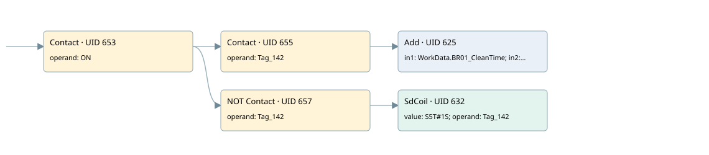

for viewing washing time in supervisor
burner control · 검색 색인 순서 14 · 원본 내부 NID 추정 13
백업 PLF 원본의 2693095 바이트 위치에서 복원한 XML. 검색 문서 1867의 객체 키 16102200e510000000000000와 연결했다. 이름 해석 8/8개. 남은 RefId는 상수 또는 미해석 참조다.
연결 구조 다시 그리기
원본 Part/PCon/Wire를 이용한 연결도다. TIA 화면의 래더 배치 또는 실행 결과를 재현한 그림은 아니다. 핀 연결은 아래 표와 원본 XML을 기준으로 읽는다. 노드 위에 마우스를 두면 피연산자 이름을 볼 수 있다.

접점·코일·블록과 피연산자
| Part UID | Gate | Negated 핀 | 연결 피연산자 |
|---|---|---|---|
| 653 | Contact | operand = ON | |
| 655 | Contact | operand = Tag_142 | |
| 625 | Add | in1 = WorkData.BR01_CleanTime; in2 = 1; out = WorkData.BR01_CleanTime | |
| 657 | Contact | operand | operand = Tag_142 |
| 632 | SdCoil | value = S5T#1S; operand = Tag_142 |
접점 경로를 펼친 조건식
Contact·O/A·비교기의 원본 연결을 읽기 쉽게 펼친 보조 해석이다. POWER는 전원 레일 시작을 뜻한다. 호출 블록·에지·타이머의 내부 동작과 다중 쓰기 순서는 이 표로 실행 검증하지 않았다. 미해석 핀과 RefId는 원문 연결표에서 확인한다.
| UID | 동작 | 대상 | 원본 접점 경로 | 내용 |
|---|---|---|---|---|
| 632 | SdCoil | Tag_142 | (ON AND NOT [Tag_142]) | 시간 동작 SdCoil; 타이머 의미 추가 확인 / 시간 인자 S5T#1S |
원본 배선 연결
| Wire UID | 동일 Wire 연결 끝점 |
|---|---|
| 659 | Powerrail {} ↔ Part 653.in |
| 642 | ORef 634 (ON) ↔ Part 653.operand |
| 654 | Part 653.out ↔ Part 655.in ↔ Part 657.in |
| 643 | ORef 635 (Tag_142) ↔ Part 655.operand |
| 656 | Part 655.out ↔ Part 625.en |
| 645 | ORef 636 (WorkData.BR01_CleanTime) ↔ Part 625.in1 |
| 646 | ORef 637 (1) ↔ Part 625.in2 |
| 647 | Part 625.out ↔ ORef 638 (WorkData.BR01_CleanTime) |
| 649 | ORef 640 (Tag_142) ↔ Part 657.operand |
| 658 | Part 657.out ↔ Part 632.in |
| 648 | ORef 639 (S5T#1S) ↔ Part 632.value |
| 651 | ORef 641 (Tag_142) ↔ Part 632.operand |
식별자 해석 근거 8개
| ORef UID | RefId | 이름 | IdentXmlPart 파일 | 해석 방법 |
|---|---|---|---|---|
| 634 | 1 | ON | 0582-IdentXmlPart.xml | UID/RID + search-text + NID agreement |
| 635 | 95 | Tag_142 | 0582-IdentXmlPart.xml | UID/RID + search-text + NID agreement |
| 636 | 97 | WorkData.BR01_CleanTime | 0585-IdentXmlPart.xml | UID/RID + search-text + NID agreement |
| 637 | 49 | 1 | 0586-IdentXmlPart.xml | literal candidate: UID/RID/NID + nearby named declarations + search-text agreement |
| 638 | 97 | WorkData.BR01_CleanTime | 0585-IdentXmlPart.xml | UID/RID + search-text + NID agreement |
| 640 | 95 | Tag_142 | 0582-IdentXmlPart.xml | UID/RID + search-text + NID agreement |
| 641 | 95 | Tag_142 | 0582-IdentXmlPart.xml | UID/RID + search-text + NID agreement |
| 639 | 98 | S5T#1S | 0586-IdentXmlPart.xml | literal candidate: UID/RID/NID + nearby named declarations + search-text agreement |
검색 코드 보조 자료
참조 명칭을 찾기 위한 자료이며 실행 순서나 AND/OR 관계는 위 연결표로 확인한다.
"on" "tag_142" add "workdata".br01_cleantime 1 "tag_142" "tag_142" s5t#1s "workdata".br01_cleantime